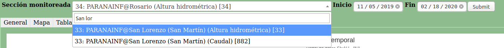
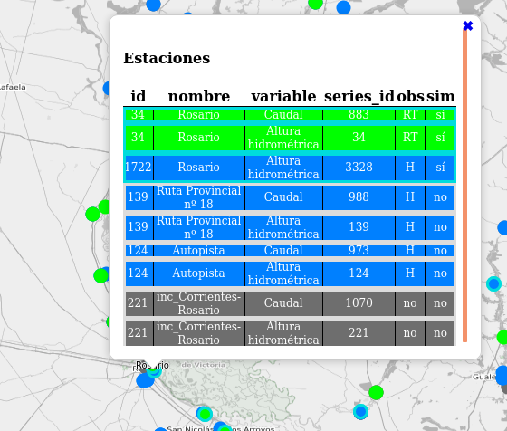

https://alerta.ina.gob.ar/a5/secciones
Hola todos. Está disponible esta página que armé para facilitar el seguimiento de alturas hidrométricas y caudales, incluidas las salidas de los modelos. Para ingresar deben usar usuario y contraseña.
Para encontrar una estación pueden usar el listado desplegable en la parte superior, en el cual se puede filtar usando parte del nombre o código de estación o nombre del curso de agua:

Luego se pueden ingresar fecha inicial y final del periodo que se desea visualizar. Luego de clickear "Submit" se cargarán los datos solicitados
En la solapa General se pueden ver los datos de la estación, la variable, y metadatos de la serie temporal observada y pronósticos si los hay.
En la solapa Mapa se puede navegar el mapa de estaciones (están agrupadas según la disponibilidad de datos y de pronósticos). Al hacer click sobre un punto se despliega una ventana emergente con el listado de estaciones / variables en esta zona del mapa:

Clickeando sobre una fila de la tabla se recarga la página con los datos de la estación y variable seleccionadas.
En las solapas Tabla y Tabla Prono se cargan respectivas tablas de datos observados y simulados, si los hay para el periodo seleccionado
En la solapa Gráfico se carga un gráfico de los datos observados y simulados disponibles.
Finalmente en Descargas se carga un listado de hipervínculos para descarga de los datos, haciendo uso de la API REST
Bueno, espero que sirva, cualquier sugerencia es bienvenida. Y para los que gusten, se puede ver el código fuente en https://github.com/cerobpm/a5
Saludos!
J.